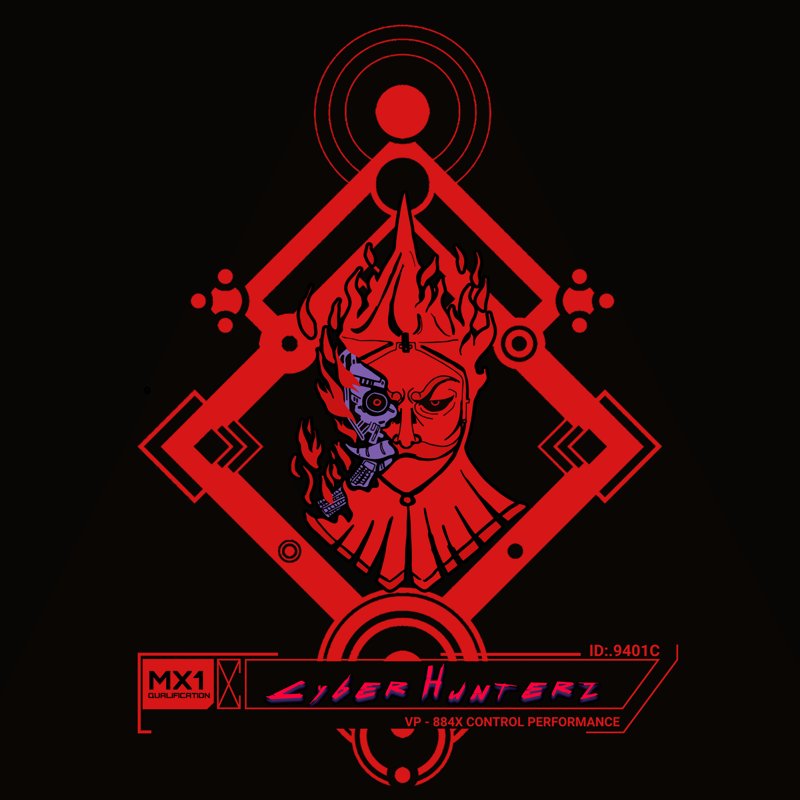

História da Facção

CyberHunterz
Kairos e Shin já se conheciam, pois eram do mesmo planeta e testemunharam de perto os efeitos da corrupção que empobrecia seu mundo. Incapazes de mudar a situação, decidiram partir na esperança de evitar que outros planetas sofressem nas mãos de grandes conglomerados. Foi durante uma missão que encontraram Vincent.
Cada um seguia seu caminho até que Kairos, Shin e Vincent se encontraram em uma missão para extrair dados do grupo Apache. Percebendo sua afinidade e habilidades complementares, decidiram formar um grupo de caçadores de recompensas chamado Cyber Hunterz (ainda não oficialmente ligado ao Comando Estelar).
Em busca de vingança, Simão contatou os Cyber Hunterz para prejudicar o conglomerado Celestia. Com o tempo, o grupo se aproximou de Simão, aproveitando suas conexões e serviços para facilitar suas missões.
Durante uma batalha em um planeta distante, a facção - composta por Kairos, Shin, Vincent e Simão - encontrou Dronada. Ela os atacou por engano, acreditando que eles estavam ligados à Slitherium, aliada da Spark Tech, que havia destruído seu planeta. Após um longo interrogatório, as tensões diminuíram. Reconhecendo o talento de Dronada, os Cyber Hunterz a convidaram para se juntar à facção, que havia mudado seu código de conduta e não realizava mais trabalhos sujos.
Não se sabe por que Black Star espionava a facção, mas mostrou grande habilidade, levando o grupo a recrutá-lo para seus objetivos misteriosos.
708145 começou a acompanhar os Cyber Hunterz por causa das habilidades de Shin em fabricar bombas brilhantes e do cabelo perfumado a pólvora da moça de fogo. Com o tempo, os membros da facção a adotaram como parte do grupo.
Kairos

Em um universo distante, no planeta Diafthorá, um planeta conhecido pela imensa corrupção que o assolava, surge a história de Kairos, um jovem destemido e perspicaz. Desde tenra idade, Kairos foi criado pelo seu pai que sempre o ensinou a andar contra a maré e o sistema, a corrupção.
O momento decisivo que mudou o destino de Kairos, ocorreu quando seu pai foi obrigado por poderosos políticos a assumir um esquema de corrupção que ele mesmo não teria participado. Kairos testemunhou a seu pai negando e por isso sendo morto. Sentindo-se impotente diante da crueldade que assolava seu lar, foi nesse momento que ele percebeu que não podia mais ficar à margem, enquanto outros sofriam.
A partir disso, Kairos cresceu com uma natureza implicante, sendo opositor a tudo que lhe diziam ou sugeriam. Mas encontrou consolo no que seu pai tinha deixado de ensinamento, um código de honra a ser seguido, por isso ingressou na facção dos Caçadores de Recompensa. Ele desenvolveu um senso aguçado de justiça por causa de seu pai e uma determinação inabalável, características que o ajudaram a enfrentar os desafios que surgiram ao longo do caminho.
Desde então, viaja pela vastidão do espaço, enfrentando perigos inimagináveis ​​e buscando recompensas por criminosos procurados. Apesar de sua natureza implicante e de sua reputação como um caçador incansável, Kairos é conhecido por sua generosidade e lealdade aos seus amigos. Ele se tornou uma figura respeitada entre os caçadores de recompensas, um verdadeiro caçador no universo em constante expansão.
Vincent

Vincent, um nativo do planeta NSA, cresceu em meio às sombras da cidade de Nocturne Falls, dominada pelo sinistro Conglomerado Apache. Desde jovem, ele testemunhou a exploração desenfreada do seu lar pelas mãos gananciosas dessa corporação militar, que lucrava com guerras induzidas e caos espalhado.
Determinado a fazer a diferença, Vincent ingressou no exército aos 18 anos, acreditando que poderia melhorar as condições de sua família. No entanto, Vincent não imaginava que as tão constantes guerras eram causadas pelos interesses do Grupo Apache, que manipulava o governo de NSA.
Durante uma dessas batalhas, Vincent sofreu um terrível acidente que custou-lhe um de seus braços, forçando-o a se aposentar do serviço militar. Sem muitas opções, ele acabou se juntando à corporação de Apache, pensando que poderia, de alguma forma, ainda fazer a diferença.
O preço da sua lealdade se mostrou alto quando foi obrigado a cometer seu primeiro ato criminoso, empurrado pelo próprio Apache para eliminar um suposto espião da rival Celestia. A verdade sobre os métodos corruptos e criminosos do Grupo Apache começou a se revelar para Vincent quando ele foi encarregado de eliminar outro suposto espião durante um vazamento de informações. Investigando mais a fundo, ele descobriu as atrocidades que a corporação cometia em nome do lucro.
Percebendo que agora era um alvo, Vincent teve que fugir de Nocturne Falls para salvar sua própria vida. Refugiando-se em uma facção rebelde, ele decidiu lutar contra as injustiças perpetradas pelas grandes corporações, especialmente contra o Grupo Apache, jurando que sua cidade natal um dia seria livre do jugo opressor que a aprisionava. Assim, equipado com sua determinação e habilidades adquiridas, Vincent se tornou uma força a ser reconhecida na luta contra o domínio corporativo em seu mundo.
Simão

Saindo de um planeta humilde, onde a vida não era fácil, Simão viu-se mergulhado no mundo do crime em busca de oportunidades para sobreviver. No entanto, o conglomerado de Celestia, na sua ânsia por semear o caos e promover conflitos, manipulou alguns dos aliados de Simão, resultando na perda de milhões de créditos para ele.
Movido pela sede de retaliação, Simão decidiu agir e entrou em contato com a facção CyberHunterz. Ele viu nessa associação uma oportunidade de atingir seus objetivos e prejudicar o conglomerado de Celestia, buscando vingança pela traição que sofrera. Ao se unir aos CyberHunterz, Simão planejava não apenas recuperar o que perdera, mas também desmantelar as operações corruptas que prejudicavam tantos em sua galáxia.
Shin

Shin não se juntou a facção Cyber Hunterz por interesse em fama ou respeito. Tendo nascido em uma região pobre do planeta Diafthorá, levou uma vida marcada por desafios, que puderam ser superados com uma boa adaptabilidade. Ele e seu amigo Kairos conseguiram se juntar a uma facção determinada (no que diz respeito aos seus interesses). Ele preza muito pelo ganho monetário e de informações, tendo em vista suas origens. Tem como hobbie projetar, criar e vender equipamentos para seus companheiros. Enxerga como vantagem ser enviado em algumas invasões orquestradas pela Slitherium, já que nessas missões de reconhecimento, é plausível que encontre materiais raros desejáveis para suas criações. Mesmo tendo uma personalidade mesquinha, ele preza muito por seus companheiros, e trabalha como um informante do Comando Estelar, passando informações privilegiadas dos planos da Slitherium dos quais tenha conhecimento.
Dronada

Dronada nasceu sob os céus avermelhados do exoplaneta Gliese 876d, um mundo onde os extremos eram a norma e a adaptação era a chave para a sobrevivência. Criada por seus pais em uma comunidade subterrânea, Dronada aprendeu os segredos da sobrevivência em um ambiente hostil. Seu pai, um engenheiro habilidoso, ensinou-lhe a arte de construir dispositivos que podiam resistir às forças brutais do planeta, enquanto sua mãe, uma curandeira talentosa, transmitiu-lhe o conhecimento ancestral das plantas e ervas que cresciam em cavernas profundas. Dronada a Gliesiana encontrou seu caminho como caçadora de recompensas após uma tragédia sombria que mudou sua vida para sempre. Quando Dronada era jovem, sua família foi abruptamente assassinada quando um conglomerado chamado Spark Tech, motivado por ganância e poder, atacou sua comunidade em busca dos recursos tecnológicos do seu povo. Durante o ataque brutal, deixando-a órfã e consumida pela dor e pela sede de vingança, ela jurou caçar e destruir aqueles responsáveis pelo ataque. Para honrar os ensinamentos de seus pais ela seguiu em frente com sua facção completando as missões em busca de recompensas com ética e respeito por aqueles que não carregam a culpa, em busca de justiça e vingança por aqueles que injustamente se foram.
Black Star
Nicollas Garbield Oliveira Sousa

Black Star, um indivíduo frio e observador, é guiado por seus interesses, que frequentemente envolvem dinheiro. No entanto, ele segue a ética e a disciplina de seu grupo. Black aprecia as batalhas e as recompensas que elas trazem. Apesar de uma história de vida tumultuada, ele é um guerreiro leal e competente, sempre vigilante em relação a tudo e a todos. Desde a infância, envolveu-se em diversos problemas, mas isso lhe proporcionou experiência e habilidades valiosas.
708145

 20 pontos de qi.
20 pontos de qi.
░░░░▄▄▄▄▀▀▀▀▀▀▀▀▄▄▄▄▄▄ ░░░░█░░░░▒▒▒▒▒▒▒▒▒▒▒▒░░▀▀▄ ░░░█░░░▒▒▒▒▒▒░░░░░░░░▒▒▒░░█ ░░█░░░░░░▄██▀▄▄░░░░░▄▄▄░░░█ ░▀▒▄▄▄▒░█▀▀▀▀▄▄█░░░██▄▄█░░░█ █▒█▒▄░▀▄▄▄▀░░░░░░░░█░░░▒▒▒▒▒█ █▒█░█▀▄▄░░░░░█▀░░░░▀▄░░▄▀▀▀▄▒█ ░█▀▄░█▄░█▀▄▄░▀░▀▀░▄▄▀░░░░█░░█ ░░█░░▀▄▀█▄▄░█▀▀▀▄▄▄▄▀▀█▀██░█ ░░░█░░██░░▀█▄▄▄█▄▄█▄████░█ ░░░░█░░░▀▀▄░█░░░█░███████░█ ░░░░░▀▄░░░▀▀▄▄▄█▄█▄█▄█▄▀░░█ ░░░░░░░▀▄▄░▒▒▒▒░░░░░░░░░░█ ░░░░░░░░░░▀▀▄▄░▒▒▒▒▒▒▒▒▒▒░█ ░░░░░░░░░░░░░░▀▄▄▄▄▄░░░░░█